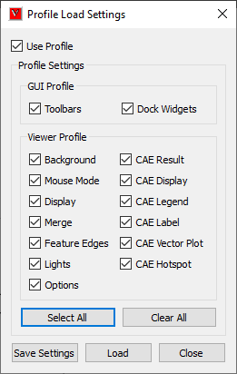
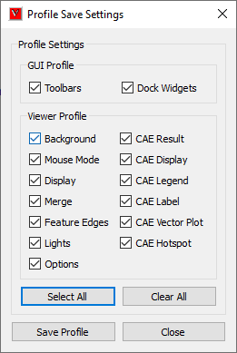

Profile Settings
VCollab Pro users can set, export and import profile configurations (a range of user selected settings) using Profile Settings in the Edit Menu. User defined profile configurations can be stored and retrieved using these settings.
The options available inside Profile Settings are explained below.
| Load Profile | It is used to select features that to be applied while loading. Pops up 'Profile Load Settings' dialog. |
| Save Profile | It is used to set what settings should be saved into profile. Pops up 'Profile Save Settings' dialog. Note: It will save only current selected features. Other non selected features configuration are kept as it was. |
| Import Profile | It used to apply profile from external profile file. Pops up 'Profile Import Settings' dialog. |
| Export Profile | It is used to save current configuration in to a profile file. the saved profile file can be imported into some other session or other computer. |
Profile Features

| Feature | Fields Profiled |
| Background | Background Mode, Background, Colors Background Texture Path Background Texture Mode |
| Mouse Mode | Mouse Click Mouse Alt + Click Mouse Shift + Click Mouse Ctrl + Click Mouse Shift + Ctrl + Clicks |
| Options | Animate Zoom PPT Auto PPT Origin PPT Size Use Plain Background In PPT Probe On MouseMove Start On CAE Animation Control Launch Update Normal On Animation |
| Display | Origin Show Origin Percentage Move Model As Mode Detail Cull Percentage Line Thickness Perspective Mode Coordinate System Axis Statistics Navigator View Point GUI Geometry Line Size Geometry Point Size |
| Merge | Merge Position Apply Current Settings Merge Custom Translation Merge Custom Rotation Merge Custom Scale Show Data Set Labels Combined Palette Multi Palette Hide Other Dataset |
| Feature Edges | Show Feature Edges Detach Geometry and Edges Feature Edge Color Feature Edge Size |
| CAE Result | Result Name Instance Name Derived Type Name |
| CAE Display | Color Plot Legend Deform Mesh Undeformed Mesh Min and Max Contour Lines |
| CAE Legend | Reverse Legend Scientific Precision Discrete Legend Colors No Result Color Display of Frame Info Legend Placement Contour Line User Color Contour Line Mode |
| CAE Label | Auto Arrange Labels Arrange Label Mode Label Font Name Label Background Color Label Text Color Label Border Color Label Background Label Border Label Font Size Label Size Label Line Color Label Line Width Keep Previous Probe Auto Update Label Info ID Display |
| CAE Vector Plot | Vector Plot Arrow Size Vector Plot Arrow Style Vector Plot Deform Vector Plot Detach Geometry Vector Plot User Color Mode Vector Plot User Vector Colors Vector Plot Node Position As Vector Direction Vector Plot Auto Scale Vector Plot Scale Factor |
| CAE Hotspot | Hotspots Count Visible Surface Keep Previous Label Hotspot Zones Top & Bottom hotspots Border Colors Mark Min Max Probe Type Template Hotspot Viewpoints All Std. Views Hotspot Viewpoints Hotspot Per Page Hotspot Viewpoints Part Regions Hotspot Compare Hotspot Compare Mode Hotspot Show All Connections Hotspot Compare With Hotspot All Model Reference |
Note
Some profile settings are saved in application session profile as well as cax file as viewpoints. In that case, viewpoint settings are preferred to profile settings. For example,
- Load a cax file in VCollab Pro.
- Create a viewpoint with vector plot OFF.
- Switch ON the vector plot.
- Enable profile option using 'Edit | Profile Settings | Save Profile'.
- It pops up 'Profile Save Settings' dialog.
- Check CAE Vector Plot.
- Click Save button.
- Close the application.
- Now vector plot - OFF is stored in cax file as viewpoint.
- Vector plot - ON is stored in Application Profile settings.
- Open VCollab Pro again.
- Load the saved cax file.
- Pro loads the cax file with user defined viewpoint.
- Even though, vector plot is ON in profile settings, vector plot is OFF because of user defined viewpoint.
If user profile directory is of Unicode characters, profile settings cannot be saved. This can be avoided by setting environment variable VCOLLAB_PROFILE_PATH with ascii character path.
Warning message pops up if the path is of Unicode characters as below.
How to set and revoke session profile?
Select 'Profile | Load Profile...' option in the viewer context menu.
It pops up 'Profile Load Settings'.

User can check and uncheck the options.
Click OK.
Select 'Profile | Save Profile...' option in the viewer context menu.
It pops up 'Profile Save Settings' dialog.

Select the options as user require.
Click 'Save' button to save the settings.
As per profile load settings, the model will be loaded.
How to export and import profile settings files?
User can export and import profile settings into external file.
Select 'Profile | Export Profile...' option in the viewer context menu.
It pops up 'Profile Export Settings' dialog.
Select the features and provide a file name.
Click file browser button. and select the file type either as .ini or .json.
Click Export button.
To import, select 'Profile | Import Profile...' option in the viewer context menu.
It pops us 'Profile Import Settings' dialog.
Select the feature as required.
Select the profile file using the file browser button.
Click Import button.
Settings from file are applied.

Profile files location
Profile path is displayed in Help | About VCollab Pro...